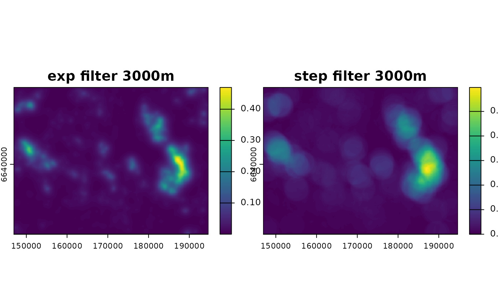
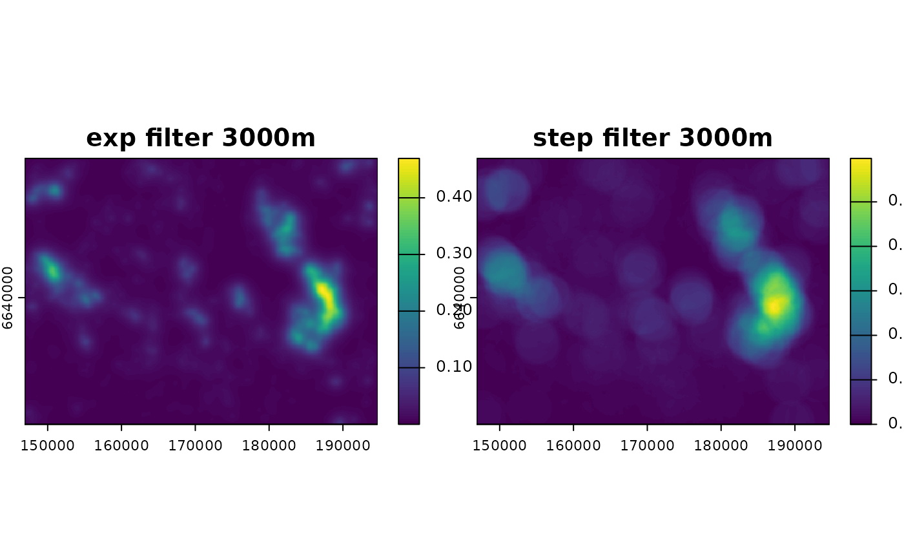

Create filters or kernel matrices for raster neighborhood analyses
Source:R/filter_create.R
filter_create.RdThis function creates matrices of weights following different
functions to be used in neighborhood analyses for rasters. In the context of
cumulative impact analysis, they represent the Zone of Influence (ZOI) of each
infrastructure point/pixel, to be used to calculate the cumulative ZOI.
It is possible to export these matrices as text files, for use with external
software such as the r.mfilter module within GRASS GIS.
Usage
filter_create(
r = 100,
radius = NULL,
type = c("exp_decay", "bartlett", "circle", "threshold_decay", "gaussian_decay",
"Gauss", "rectangle")[1],
zoi_limit = 0.05,
half_life = NULL,
zoi_hl_ratio = NULL,
sigma = NULL,
min_intensity = 0.01,
max_dist = 5000,
normalize = FALSE,
divisor = 1,
round_vals = NULL,
save_txt = FALSE,
save_format = c("GRASS_rmfilter", "raw")[1],
save_folder = NULL,
save_file = NULL,
parallel = TRUE,
...
)Arguments
- r
[numeric,SpatRaster,RasterLayer]
Either a numeric value corresponding to the resolution (pixel size) that each pixel in the filter matrix should correspond to; or a raster object (SpatRasterfrom the terra package orRasterLayer,RasterBrick, orRasterStackfrom therasterpackage) from which such resolution can be extracted.- radius
[numeric(1)=NULL]
Zone of Influence (ZOI) radius, in map units (preferentially meters). The ZOI radius is the distance, scale, or buffer size around a feature up to which we consider there is an effect or influence of an infrastructure or variable. Infilter_create, the interpretation of the radius differ depending on the shape of the zoi (parametertype):For the circle neighborhood (
type = "circle"ortype = "threshold"ortype = "step"), theradiuscorresponds to the radius (or threshold) of the circle, beyond which the filter is zero.For the rectangular neighborhood (
type = "rectangle"ortype = "box"), theradiuscorresponds to half the size of the square size, orsquare size = 2*radius. For a rectangular filter with different size of the sides, useterra::focal()(but please note the interpretation of the parameters is different).For the Bartlett neighborhood (
type = "bartlett"ortype = "linear_decay"ortype = "tent_decay"), theradiuscorresponds to the distance beyond which the filter is zero.For the exponential decay neighborhood (
type = "exp_decay") and the Gaussian decay neighborhood (type = "Gauss"ortype = "gaussian_decay"), theradiuscorresponds to the distance where the exponential decay function goes below a given limit distance defined byzoi_limit. Seezoi_functions()for details.If
radius = NULL, the exponential or gaussian decay matrices are defined based on other parameters – see below. This option will raise an error for the other types of filters.
- type
[character(1)="exp_decay"]{"exp_decay", "bartlett", "circle", "threshold_decay", "gaussian_decay", "Gauss", "rectangle"}
Shape of the Zone of Influence of weight matrix. It can be any of:"circle","threshold","threshold_decay","step"or"step_decay"for a threshold decay ZOI;"exp_decay"for exponential decay ZOI;"Gauss","gaussian", or"gaussian_decay"for Gaussian decay ZOI;"bartlett","bartlett_decay","linear_decay", or"tent_decay"for linear decay ZOI;"rectangle"or"box"for a rectangular ZOI. There might be some correspondence between the weight matrixtypeinfilter_createand other similar functions (e.g.type = "rectangle"andtype = "boxcar"insmoothie::kernel2dmeitsjer()ortype = "Gauss"interra::focalMat()with parametertype = "gauss"n smoothie::kernel2dmeitsjer); however, the interpretation of the parameters used to define these matrices is different between functions.
- zoi_limit
[numeric(1)=0.05]
For non-vanishing filters (e.g.exp_decay,gaussian_decay), this value is used to set the relationship between the ZOI radius and the decay functions:radiusis defined as the minimum distancexat which the ZOI assumes values belowzoi_limit. The default is 0.05. This parameter is used only ifradiusis notNULL.- half_life
[numeric(1)=NULL]
Half life of the exponential decay function, in meters. By definition, the half life is the distance where the exponential decay function reaches 0.5 of its maximum value. For theexp_decayfunction, if the ZOI radius parameter is null (radius = NULL), the value of the exponential half life (half_life = log(2)/lambda) can used to parameterize the exponential decay function. See details inzoi_functions().- zoi_hl_ratio
[numeric(1)=6]
For theexp_decayfunction, if both the ZOI radiusradiusandzoi_hl_ratioare given andhalf_lifeisNULL, this value is used to set the ZOI radius (andzoi_limitis ignored).zoi_hl_ratiois the ratio between the ZOI radius value and the half life of the exponential function. For instance, ifradius = 1200andzoi_hl_ratio = 6, this meanshalf_lifeis 200. As a consequence, the exponential decay ZOI function decreases to 0.5 at distance 200, and the ZOI radius = 1200 is defined as the distance at which the ZOI decreases to 0.5**6 = 0.015625.- sigma
[numeric(1)=NULL]
Standard deviation of the Gaussian function. It related to the Gaussian decay rate \(\lambda\) aslambda = 1/(2*sigma^2). Only considered to compute the ZOI for thegaussian_decayfunction when the ZOI radius parameter is null (radius = NULL).- min_intensity
[numeric(1)=0.01]
Minimum intensity of the exponential and Gaussian decay functions to define the radius of the window that define the filter.- max_dist
[numeric(1)=50000]
Maximum size (in meters) to define the radius of the window that defines the filter. Only applicable for exponential and Gaussian decay functions.- normalize
[logical(1)=FALSE]
Whether the matrix should be normalized (sum of all cells is 1 ifnormalize = TRUE) or kept as it is (default,normalize = FALSE).- divisor
[numeric(1)=1]
By default, 1. This is the divisor of the neighborhood matrix when used withinr.mfilter. According the the module documentation, "The filter process produces a new category value for each cell in the input raster map layer by multiplying the category values of the cells in the n x n neighborhood around the center cell by the corresponding matrix value and adding them together. If a divisor is specified, the sum is divided by this divisor."
If the divisor is zero, "then the divisor is computed for each cell as the sum of the MATRIX values where the corresponding input cell is non-null." In other words, the output map will be rescaled to the interval $0,1$. Ifnormalize = TRUE, the divisor is set ton*n.- round_vals
[numeric(1)=NULL]
Number of digits for rounding the weights in the output matrix. IfNULL(default), weights are not rounded.- save_txt
[logical(1)=FALSE]
Should the ZOI matrix be saved in an external text file? IfFALSE(default), the output matrix is just printed within the R session.- save_format
[character(1)="GRASS_rmfilter"]{"GRASS_rmfilter", "raw"}
Format in which the function should be saved. Currently, either of the two options:GRASS GIS format for the module
r.mfilter(save_format = "GRASS_rmfilter"), see details here);raw matrix (
save_format = "raw"), in which only the values of the matrix are printed.
- save_folder
[character(1)=NULL]
Path to the folder where the matrix file should be written. IfNULL, the current working directory is used.- save_file
[character(1)=NULL]
Name of the output file, generally a ".txt" file. IfNULL, a standard filename is created, using thetypeandradius. E.g. "filter_bartlett2000.txt".- parallel
[logical(1)=TRUE]
Whether the computation should be paralelized or not (details in the documentation of ther.mfiltermodule).- ...
Additional parameters (none implemented).
Value
A matrix with the weight values. In the context of cumulative impact assessment, we call it a
zone of influence (ZOI) matrix used to compute the cumulative zone of influence. If save_txt = TRUE,
the matrix is saved in an output text file, e.g. to be used with external software.
Details
The function creates \(n\) x \(n\) ZOI or weight matrices based on
functions with different shapes and parameterized with the ZOI radius, where
\(n\) is the dimension of the matrix.
For some functions (e.g. threshold decay, linear decay),
the size of the matrix is defined by the ZOI radius, in meters,
given the intended resolution (parameter r), potentially adding new lines
and columns with value zero to keep \(n\) an odd number.
For non-vanishing function (e.g. exponential or Gaussian decay),
even though the function is parameterized with the ZOI radius the size of
the matrix can go beyond this radius. In this case, the size of the matrix
\(n\) is defined either by a minimum intensity function value
(parameter min_intensity) or by a maximum distance for
the matrix radius (parameter min_dist, which can be set to be the radius).
Keeping \(n\) at a reasonable size guarantees that the neighborhood
analysis using such input weight matrices is computationally feasible.
Possible future implementation: compare results with
smoothie::kernel2dsmooth() and smoothie::kernel2dmeitsjer(),
maybe wrap some options here.
See also
See zoi_functions() for some ZOI function shapes and
filter_save() for options to save the ZOI matrix as a text file.
See also smoothie::kernel2dmeitsjer(), terra::focalMat(), and
raster::focalWeight() for other functions to create filters or weight matrices.
See
r.mfilter,
r.resamp.filter, and
r.neighbors for
GRASS GIS uses of filters in neighborhood analysis.
Examples
library(terra)
# load example - raster of tourist private cabins
f <- system.file("raster/sample_area_cabins.tif", package="oneimpact")
r <- terra::rast(f)
# terra::ext(r)[1:2] %>% diff
# set value zero where there are no cabins
r[is.na(r)] <- 0
# create exponential filter
filt_exp1000 <- filter_create(r, radius = 1000,
zoi_limit = 0.01,
type = "exp_decay",
max_dist = 5000,
normalize = T)
filt_exp3000 <- filter_create(r, radius = 3000,
zoi_limit = 0.01,
type = "exp_decay",
max_dist = 5000,
normalize = T)
# use exponential filter
neigh_r_exp1000 <- terra::focal(r, filt_exp1000, fun = "sum",
na.policy = "omit", na.rm = TRUE)
neigh_r_exp3000 <- terra::focal(r, filt_exp3000, fun = "sum",
na.policy = "omit", na.rm = TRUE)
# plot
plot(c(r, neigh_r_exp1000, neigh_r_exp3000),
main = c("original", "exp filter 1000m", "exp filter 3000m"))
 # create step filter
filt_step3000 <- filter_create(r, radius = 3000, type = "step",
normalize = T)
# use step filter
neigh_r_step3000 <- terra::focal(r, filt_step3000, fun = "sum",
na.policy = "omit", na.rm = TRUE)
# plot
plot(c(neigh_r_exp3000, neigh_r_step3000),
main = c("exp filter 3000m", "step filter 3000m"))

# plot(app(c(neigh_r_exp3000, neigh_r_step3000), "diff"))
# create bartlett (linear/tent decay) filter
filt_bart3000 <- filter_create(r, radius = 3000, type = "bartlett",
normalize = T)
# use bartlett filter
neigh_r_bart3000 <- terra::focal(r, filt_bart3000, fun = "sum",
na.policy = "omit", na.rm = TRUE)
# create Gaussian filter - parameterized with zoi
filt_gauss3000 <- filter_create(r, radius = 3000,
type = "Gauss",
zoi_limit = 0.01,
normalize = T)
# use Gaussian filter
neigh_r_gauss3000 <- terra::focal(r, filt_gauss3000, fun = "sum",
na.policy = "omit", na.rm = TRUE)
# plot
plot(c(neigh_r_exp3000, neigh_r_step3000, neigh_r_bart3000, neigh_r_gauss3000),
main = c("exp filter 3000m", "step filter 3000m",
"Bartlett filter 3000m", "Gaussian filter 3000m"))
# create step filter
filt_step3000 <- filter_create(r, radius = 3000, type = "step",
normalize = T)
# use step filter
neigh_r_step3000 <- terra::focal(r, filt_step3000, fun = "sum",
na.policy = "omit", na.rm = TRUE)
# plot
plot(c(neigh_r_exp3000, neigh_r_step3000),
main = c("exp filter 3000m", "step filter 3000m"))

# plot(app(c(neigh_r_exp3000, neigh_r_step3000), "diff"))
# create bartlett (linear/tent decay) filter
filt_bart3000 <- filter_create(r, radius = 3000, type = "bartlett",
normalize = T)
# use bartlett filter
neigh_r_bart3000 <- terra::focal(r, filt_bart3000, fun = "sum",
na.policy = "omit", na.rm = TRUE)
# create Gaussian filter - parameterized with zoi
filt_gauss3000 <- filter_create(r, radius = 3000,
type = "Gauss",
zoi_limit = 0.01,
normalize = T)
# use Gaussian filter
neigh_r_gauss3000 <- terra::focal(r, filt_gauss3000, fun = "sum",
na.policy = "omit", na.rm = TRUE)
# plot
plot(c(neigh_r_exp3000, neigh_r_step3000, neigh_r_bart3000, neigh_r_gauss3000),
main = c("exp filter 3000m", "step filter 3000m",
"Bartlett filter 3000m", "Gaussian filter 3000m"))
 # plot(app(c(neigh_r_exp3000, neigh_r_bart3000), "diff"))
# plot(app(c(neigh_r_step3000, neigh_r_bart3000), "diff"))
# Not run
# save outside R for use in GRASS GIS
if (FALSE) { # \dontrun{
filter_create(r, radius = 1000,
type = "bartlett",
max_dist = 5000,
normalize = T, save_txt = TRUE)
} # }
# plot(app(c(neigh_r_exp3000, neigh_r_bart3000), "diff"))
# plot(app(c(neigh_r_step3000, neigh_r_bart3000), "diff"))
# Not run
# save outside R for use in GRASS GIS
if (FALSE) { # \dontrun{
filter_create(r, radius = 1000,
type = "bartlett",
max_dist = 5000,
normalize = T, save_txt = TRUE)
} # }